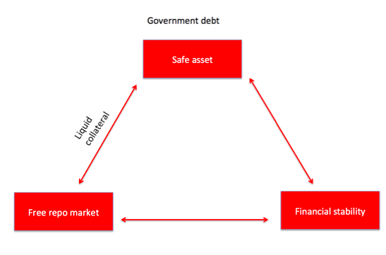

7 Macro Finance
Cochrane Abstract
Macro-finance addresses the link between asset prices and economic fluctuations. Many models reflect the same rough idea: the market’s ability to bear risk is greater in good times, and less in bad times. Models achieve this similar result by quite dif- ferent mechanisms. I contrast their strengths and weaknesses. I highlight directions for future research, including additional facts to be matched, and limitations of the models that should prod future theoretical work. I describe how macro-finance mod- els can fundamentally alter macroeconomics, by putting time-varying risk premiums and risk-bearing capacity at the center of recessions rather than variation in the interest rate and intertemporal substitution.
Cochrane Memo
Asset prices and returns are correlated with business cycles. Stocks rise in good times, and fall in bad times. Real and nominal interest rates rise and fall with the business cycle. Stock returns and bond yields also help to forecast macroeconomic events such as GDP growth and inflation. 1 Stocks have a substantially higher average return than bonds. Typical estimates put the equity premium between 4% and 8%. Even 4% is puzzling. Why do people not try to hold more stocks, given the power of compound returns to increase wealth dramatically over long horizons?
The answer is, of course, that stocks are risky. But people accept many risks in life. In lotteries and at casinos they even seek out risks. The answer must be that stocks have a spe- cial kind of risk, that stock values fall at particularly inconvenient times or in particularly inconvenient states of nature.
So, just what are the bad times or bad states of nature, in which investors are particularly anxious that their stocks do not fall? Well, something about recessions is an obvious candi- date. Losing money in the stock market is especially fearsome if that event tends to happen just as you lose your job, your business is losing money, you may lose your house, and so on. But what is the feared event exactly? How do we measure that event? And what does this fear that stocks might fall in recessions tell us about the macroeconomics of recessions? These questions are what macro-finance is all about.
Why are people so afraid of stocks when they do not seem that afraid of other events?
In sum, we face two main questions. First, the equity premium question: What is there about recessions, or some other measure of economic bad times, that makes people particu- larly afraid that stocks will fall during those bad times—and so people require a large up- front premium to bear that risk? Second, the predictability question: What is there about recessions, or some other measure of economic bad times, that makes that premium rise—that makes people, in bad times, even more afraid of taking the same risk going forward?
The consumption-based model works well at a qualitative level, as does the story that people are afraid of recessions, and become more risk averse during recessions. The challenge is to find concrete, quantitative, and theoretically explicit measures of fearful outcomes and of risk aversion, that quantitatively account for asset pricing facts.
**Macro-finance vs Macro-economics*
Though called “macro-finance” this literature still stands quite apart from macroeco- nomics. Macroeconomics by and large does not use, for understanding recession-related quantity and goods-price dynamics, the preferences or market structures that macro- finance uses to understand recession-related asset pricing dynamics. Macroeconomics by and large ignores first-order effects of uncertainty, focusing on “the” short term interest rate and the consequent allocation of consumption over time.
The central lesson of macro-finance denies this approximation: Business cycle-related asset price fluctuations are all about variation in risk premiums.
In recessions, both consumption and investment fall, and so output and the labor to pro- duce it fall. Most theories of business cycles therefore start with two questions: First, why does consumption fall? Second, why does a rise in desired saving not produce a rise in in- vestment? These questions have been the heart of macroeconomics since Keynes.
Macro-finance suggests that recessions, such as fall 2008, are not times at which people became thrifty, saving more to provide a better tomorrow, and they are certainly not times of high real interest rates. Macro-finance suggests that people consumed and in- vested less because they were scared to death—because of risk, risk aversion, high risk pre- miums, precautionary savings, not because of sudden thriftiness and a wrong level of the overnight federal funds rate.
Corporate investment has very little relationship with real interest rates, despite the prevalence of this channel in macroeconomic models.
The key to falling investment, then, is a mismatch between the riskiness of real corpor- ate investment projects, and the higher risk aversion of savers.
This is not the only path to greater unity between macroeconomics and macro-finance, of course. It allows us to merge the relatively frictionless preference- or market-structure based models (habits, recursive utility, idiosyncratic risk, rare disasters) that generate time- varying risk aversion with the standard general-equilibrium aggregative models that per- vade macroeconomics. But the behavioral view, as outlined above, might suggest instead a reverse causality by which behavioral misperceptions in stock markets spill over to macro- economics, or it might suggest a pervasive behavioral misperception behind both macro and finance. And merging macroeconomics with asset pricing is the rallying cry of the insti- tutional finance/frictions research agenda, which aims to put pervasive credit constraints, balance sheet imbalances, agency frictions, and so forth at the heart of macroeconomics as well as of asset pricing.
Cochrane (2017) Macro-Finance (pdf)
7.1 Postwar Macrofinancial Regime
Braun
The macro-financial regime of the postwar period was characterized by substantial financial repression. Strict financial regulation and controls on international capital mobility subor- dinated private finance to the interests of the non-financial and the public sectors. To the extent funded pension systems existed, they were “characterized by a close proximity between the state and pension funds.”
Braun (2021) Fueling Financialization: The Economic Consequences of Funded Pensions (pdf
)
7.2 The (Impossible) Repo Trinity
Gabor
While the state withdrew from economic life, privatizing state-owned enterprises or state banks, and putting macroeconomic governance in the hands of independent central banks, its role in financial life grew bigger. Sovereign debt evolved into the cornerstone of modern financial systems, used as benchmark for pricing private assets, for hedging and as base asset for credit creation via shadow banking. The state’s role as debt issuer, passive and systemic at once, has been reliant, beyond the arithmetic of budget deficits, on the intricate workings of the repo trinity.
The repo trinity captures a consensus in central bank circles emerging after the 1998 Russian crisis, the first systemic crisis of collateral-intensive finance, that financial stability requires liquid government bond markets and liberalized repo markets

The Fed and the Treasury celebrated repos as innovative, liquidity enhancing instruments that would support the state in the post fiscal-dominance era.
Pressured to adjust to a world of independent central banks, market-based financing and global competition for liquidity, European states embarked on a project of creating modern government bond markets, with modernity understood to mean the structural features of the US government bond market: regular auctions, market-making based on primary dealers and a liberalised repo market.
Central banks, with the Bank of England leading the way, now accept that financial stability means supporting liquidity in collateral markets in times of stress rather than supporting banking institutions as in the traditional lender of last resort (LOLR) model.
The quiet revolution in crisis central banking that involves direct support for core markets may appear like, but does not entail a return to, fiscal dominance. Rather, it creates financial dominance, defined as asymmetric support for falling asset prices.
7.3 The Washington Consensus
Gabor
The Washington Consensus paradigm was anchored in the work of John Williamson. The Washington Consensus outlined ten policy areas that would set countries on firm market foundations, under a ‘holy Trinity’ of macroeconomic stabilization through lower inflation and fiscal discipline; liberalization of trade and capital flows, of domestic product and factor markets; and privatization of state companies.
After the East Asian crisis, against the poor performance of countries closely wedded to the Washington Consensus prescriptions and the revolt of notable insiders such as Joseph Stiglitz, Gore announced an Asian developmental model, updated to the ‘age of global money’.
Financial globalization is alive and well, and sets the particular context in which ‘international development’ is pursued in the 21 st century. As Lord Stern, of the influential G20 Eminent Persons Group, put it: ‘the challenge of achieving the Sustainable Development Goals (SDG) is in large measure that challenge, of fostering the right kind of sustainable infrastructure’, for which, ‘you have to have good finance, the right kind of finance, at the right scale, at the right time’ 1 . The new development mantra, spelled out in the Billions to Trillions agenda, the World Bank’s Maximising Finance for Development, or the G20 Infrastructure as an Asset Class, aims to create investable development projects that can attract global investors and orient their trillions into financing the SDG ambitions.
The Washington Consensus codified what Williamson described as ‘belief in fiscal discipline’ against ‘left-wing believers in Keynesian stimulation via large budget deficits’, a perspective that became ‘almost an extinct species’ in the 1990s.
7.4 The Wall Street Consensus
[See separate similar section based on 2021 -draft at end (Ch28?)]
Gabor Abstract
The Wall Street Consensus is an elaborate effort to reorganize development interventions around partnerships with global finance. The Billions to Trillions agenda, the World Bank’s Maximising Finance for Development or the G20’s Infrastructure as an Asset Class all call on international development institutions and governments of poor countries to ‘escort capital’ – institutional investors and the managers of their trillions in assets – into investable development assets. For this, ten policy commandments aim to forge the de-risking state and accelerate the structural transformation of local financial systems towards market-based finance. The state risk- proofs development assets for institutional investors by taking on its balance sheet: (i) demand risks attached to commodified (social) infrastructure assets, (ii) political risk attached to policies that would threaten profits, such as nationalization, higher minimum wages and climate regulation, (iii) climate risks that may become part of regulatory frameworks; (iv) bond and currency markets risks that complicate investors’ exit. The new ‘development as derisking’ paradigm narrows the scope for a green developmental state that could design a just transition to low-carbon economies.
Gabor Memo
For instance, at the 2017 launch of the Maximising Finance for Development, the World Bank promised global investors $12 trillion in market opportunities that include “transportation, infrastructure, health, welfare, education’, minted into bankable/investible projects via public-private partnerships (PPPs). These are long-term contractual arrangements through which the private sector commits to finance, construct and manage public services as long as the state, with multilateral development bank support via blended finance, shares the risks to guarantee payment flows to PPP operators and investors.
This shift in the development agenda can be conceptualized as the Wall Street Consensus, an emerging ‘Development as Derisking’ paradigm that reframes the (Post) Washington Consensus in the language of the Sustainable Development Goals, and identifies global finance as the actor critical to achieving the SDG.
Development as derisking starts with the question ‘how to make projects bankable’, or how to construct investible development asset classes.
Wall Street Consensus marks a new moment in capitalist accumulation, from what David Harvey termed ‘accumulation by dispossession’ to accumulation by de-risking.
The state building project in the Wall Street Consensus is more ambitious than the Post- Washington Consensus tolerance of the state as corrector of market failures, through regulation and poverty alleviation. The derisking state creates a safety net for the holders of development assets, protecting their profits from demand risks attached to infrastructure assets; from political risks attached to policies that would threaten cash flows, including nationalization, higher minimum wages and, critically, climate regulation; and from bond liquidity and currency risks. These risks are transferred to the balance sheet of the state.
The practice of de-risking goes back to the developmental state, but its politics changed. The developmental state ‘de-risked’ domestic manufacturing in priority, mainly export, sectors through industrial policies. It was successful where it had the capacity to discipline local capital, to govern market failures through evolving institutional structures and to generate elite support for the developmental state as a political project.
In its modern version, the entrepreneurial state adopts a “mission-oriented” market-shaping approach that shares the risks and returns with highly-innovative private industries. In contrast, the WSC state de-risks development asset classes for global institutional investors without the embedded autonomy of the developmental state. It lacks an autonomous strategic vision, unless ‘more infrastructure’ can be described as such, and has fewer tools to discipline global finance.
The WSC downplays the risks of the macro-financial order it seeks to impose. It engineers financial globalization that increases vulnerability to volatile capital flows. In prioritizing market access, the Grand Bargain with private finance protects bondholders from participating in debt renegotiations or debt service suspension that poor and emerging countries require when under they come under the pressure of large shocks such as the COVID19 pandemic or extreme climate events. Perhaps more importantly, it threatens developmental policy space by narrowing the scope for a green developmental state that could design a just transition to low-carbon economies, where the burden of structural change does not disproportionately fall on the poor.
The PPP contracts specifies the distribution of risks between the public and the private sector, while the state’s derisking commitments are recorded as contingent liabilities, and do not count as public debt. While PPPs are more expensive than traditional public investment, the illusion of fiscal effectiveness allows governments to circumvent budgetary restrictions, often in the guise of progressive infrastructure policies, as ‘affordable housing’ PPP projects in Brazil and Colombia suggest. The legal battles to code capital into development asset classes requires the state to take risks from the private sector onto its balance sheet, in a clandestine reorienting of public resources that maintains the ideological commitment to ‘fiscal responsibility’.
The WSC state assumes demand risk in user-fee based (social) infrastructure and political risk that future governments might (re-)nationalize commodified infrastructure or introduce tighter regulations, ranging from labour laws to climate regulations that would affect profitability.
Uruguay’s PPP law, passed by the Mujica government in 2011, caps the total direct and contingent liabilities generated by PPPs for the state to 7% of the previous year’s GDP, and fiscal transfers to private operators to 0.5% of previous year’s GDP!
The fiscal costs of protecting investors from demand volatility will rise rapidly as extreme climate events accelerate. Indeed, the climate crisis creates political and demand risks that institutional investors need de-risking for.
The turn to private finance as vehicle for sustainable development requires a change in financial structures to accommodate the portfolio glut. It makes shadow banking, understood as the production (via securitization) and financing (via wholesale funding and derivative markets) of tradable securities, the desirable structure for financial systems across the Global South. Indeed, the WSC consolidates several global initiatives to restructure bank-based financial systems into market-based finance or shadow banking, where institutional investors can easily purchase local bonds (securities), including infrastructure-backed securities, and finance as well as hedge their securities positions via repos and derivative markets. Structural policies shift from developmental states’ concern with the productive structure, to the financial system.
Since market-based finance is more systemically vulnerable than traditional bank-based systems, the Wall Street Consensus assigns a triple de-risking role to central banks: in bond markets and currency markets as market-makers of last resort, and, forced by the inevitable consequences of green washing, as climate rescuers of last resort, for assets left devalued by extreme climate events.
Gabor (2022) The Wall Street Consensus (pdf)
7.4.1 Namibia Case
Gabor and Sylla
Structural changes towards market-based finance, accelerated by US-led financial globalization, manifest as a glut of institutional capital — trillions of US dollars amassed through the shift from welfare state to asset-based welfare and expanded through aggressive leverage in shadow banking — that constantly seeks new asset classes to generate yield.
This establishes an institutional hierarchy whereby central banks target inflation under full capital mobility, without coordination with fiscal authorities and under the systemic vulnerabilities triggered by growing insertion in the global financial cycle. Within that borderland local (political) agency find space to shape the specific architecture of derisking interventions in place across distinctive polities.
The notion of the derisking state describes and theorizes the distinctive mutations in economic statecraft oriented towards the production of investibility.
The derisking bloc organized around SDG Namibia One mostly in- volves extraverted domestic investors, 17 foreign investors and concessional lenders, an ‘industrialization by invitation’ approach all too familiar to post- independence African states racing to the bottom to attract foreign capital. This leaves the derisking state in a weak position to discipline the foreign beneficiaries of its interventions, or indeed to promote national champions that could compete with foreign investors. Derisking-based industrial part- nerships surrender the pace and ultimate agency of structural transformation to private (mostly foreign institutional) capital.
Equally important, this vision of derisking partnerships downplays Mkandawire’s analysis of the structural component of the developmental state: the need to build institutional and technocratic capacity to design long-term economic transformation and enforce the participation of private capital in it. Global North initiatives to skill a small labour force for the green hydrogen economy aside, the very logic of relying on PPPs to develop a hydrogen industry is predicated on the assumption that the government does not need the expertise of highly capable industrial tech- nocrats. Africa may end up exporting hydrogen commodities vul- nerable to price volatility and neocolonial extractivism rather than green hydrogen technology.
African countries should abandon industrialization-by-derisking and instead experiment with new forms of green public ownership in hydrogen infrastructure and in- dustry while setting up institutions capable of disciplining local green in- dustrial winners. It should revisit the history of successful industrial policy that subsidized credit via state-owned banks, guaranteed demand via pub- lic procurement, promoted exports via subsidies and competitive exchange rates. To finance this, it first has to channel (some of) its share of green hydrogen revenues for the imports of green technologies. Second, it has to overtly reject the WSC insistence that the race to green industrialization is not a macroeconomic question, that it can be achieved without a change in the macrofinancial regime. Rather, the green developmental state must re- order its macro institutions to set the foundations for a closer relationship between fiscal authorities, industrial authorities and the central bank, neces- sary for the strategic coordination of state-led green industrialization.
Gabor and Sylla (2023) Derisking Developmentalism: A Tale of Green Hydrogen (pdf)
7.5 Critical Macro-Finance (CMF)
Gabor
Critical macro-finance opens up new avenues for exploring the political economy of liquid asset production in market-based finance. It stresses that such liquidity practices, re-ordering interconnected and hierarchical balance sheets, generate new types of money and systemic liabilities. It also focuses analytical attention on the ensuing ideational struggles and structural pressures to reorient macroeconomic regimes towards a derisking state.
US-led financial capitalism has evolved around market-based finance, anchored in changing practices for producing liquidity
Global finance is organized on interconnected, hierarchical balance sheets, increasingly subject to time-critical liquidity
Credit creation in global market-based finance requires new forms of money.
Market-based finance requires a derisking state, for systemic liabilities and new asset classes.
CMF follows Minsky (1957) in scrutinizing financial markets for evolutionary changes in liquidity structures. These changes render monetary policy less effective or constrain fiscal policy through the collateral function of sovereign debt, while simultaneously sowing the seeds of endogenously fragile finance. CMF thus points to evolving liquidity regimes, from the imperative of the repo-liquid sovereign of the 1990s, to resilient systemic liquidity through the sovereign safe asset of the 2000s, to the rise of Exchange Traded Funds (ETFs) in the 2010s and, most recently, of green finance in the 2020s. These regimes are typically pioneered in the US then ‘exported’ to the rest of the global dollar system.
The battle of ideas behind the rise of ‘liquid’ market-based finance in the 1980s and 1990s is less studied, perhaps because the political language of low interest rates required by the Big Keynesian State morphed into the (obscure) technical macro-financial language of liquidity.
Repos is a crucial liquidity innovation for sovereign bond markets in macro-regimes no longer organized by Keynesian institutional logics: governments that had lost access to their central banks could instead turn to repo markets to ensure liquidity for their sovereign debt.
The co-evolution of repo-based finance and fiscal policy ushered in the age of market liquidity, the quest for securities that could be instantly converted into cash without changes in price, and for monetary relationships built on liquid securities collateral.
CMF enables us to flesh out the political economy of evolving liquidity practices in three areas: the mechanics of financial crises, the sovereign bond/safe asset basis for structural power, and the production of new (non-dollar) asset classes.
Crises in market-based finance play out through the plumbing. The repo plumbing accommodates mark-to-market balance sheets, feeding cycles of liquidity and leverage. Lehman’s collapse made visible the explosive nature of these cycles, triggering runs on the repo market through liquidity spirals.
CMF approaches crisis management as a form of political struggle over institutional changes necessary to stabilize the plumbing of market-based finance. It focuses analytical attention on systemic mutations in the plumbing, from repos to ETF shares built on bond/equity collateral baskets.
Market-based finance hardwires the imperative of the liquid sovereign politically and structurally in the functioning of the (global) financial system.
European finance in the 1960s and 70s was the rise of the Eurodollar markets, then the story of the 1990s was the Americanization of national financial systems – the adoption of US repo-sovereign liquidity structures.
Paradoxically, the collapse of Long-Term Capital Management, the first systemic failure of a repo financier since the Great Depression, accelerated the global push for Americanized financial systems. Central banks advised that anchoring sovereign bond markets in liberalized repo markets would produce safe assets for market-based finance. But the global financial crisis revealed that the repo/sovereign nexus is not a guarantee of safety for sovereigns.
The export of the American model of financial capitalism reflects the growing demand for new asset classes, including liquid non-US debt. This qualifies the IPE emphasis on (euro)dollar assets. While these assets remain systemically important, the search for new asset classes to fill growing balance sheets is a broader phenomenon. Temporarily slowed by the countervailing monetary power of emerging countries in a post-crisis context, the Americanization of domestic finance has returned through several global projects, from the G20’s Local Currency Bond Market Initiative to the World Bank’s Maximizing Finance for Development. These initiatives call for replicating US liquidity structures and replacing dollar debt with liquid local asset classes – from ‘SDG development’ bonds to ETFs and green bonds – that can attract the trillions of dollars held by global institutional investors. A CMF lens therefore opens up several crucial questions. For example, what are the implications of organizing development interventions around market-based finance? And how should we understand domestic resistance to the Americanization of national finance in countries – such as China – that are embracing market- based finance in a world of interconnected, hierarchical balance sheets?
Market-based finance entangles assets and liabilities in novel ways.
Take repos. (Shadow) banks finance securities positions by creating repo deposits that are collateralized by those very securities. When collateral price increases, the ensuing margin calls return assets or cash to the (shadow) bank, enabling more leverage. The macro-financial novelty of debt relationships forged via collateral-intensive balance sheets rests in the fragile mechanics of leverage tying assets and liabilities.
In the age of global market-based finance, hierarchies are changing. Capitalism has a distinctive logic of temporalization that can be traced back to how balance sheets codify time. Agents ‘temporally transform’ assets and liabilities, manipulating their time horizons.
Market-based finance shrinks monetary time, as collateral is subjected to the pressures of time-critical liquidity, whereby “a settlement payment, delivery of securities, or transfer of collateral must be made at a particular location, in a particular currency (or securities issue), and in a precise timeframe measured not in days, but in hours or even minutes”. Time-critical liquidity renders not only central banks, but also CCPs (Central Clearing Counterparties) and tri-party repo agents, as systemic nodal points in networks of interconnected balance sheets.
Structural power in global finance is anchored institutionally. The Americanization of global finance, which allows the US to sell dollar debt, was accelerated by Volcker’s turn to monetarism and financial innovation focused on developing liquid securities markets.
The financialized (carry-trade) practices of banks, households, and (financial) firms in non-US financial systems increase dependency on US dollar funding conditions.
Evolutionary changes in liquidity structures render monetary policy less effective or constrain fiscal policy through the collateral function of sovereign debt.
CMF thus points to evolving liquidity regimes, from the imperative of the repo-liquid sovereign of the 1990s, to resilient systemic liquidity through the sovereign safe asset of the 2000s, to the rise of Exchange Traded Funds (ETFs) in the 2010s and, most recently, of green finance in the 2020s.
Credit creation in market-based finance is structurally different to credit creation in bank- based finance. Relationship banks create deposit liabilities to finance traditional loan assets, and these deposits acquire moneyness – ready convertibility into cash at par – through a social contract with the state. In collateral-based finance, money begins where bank deposits end. (Shadow) banks find new ways to monetize credit and escape the constraints of state-backed money.
What renders repo liabilities ‘money’ is not their ability to settle debts (you cannot – yet – buy a burger with repos) but their ability to store value at par, that is, to credibly promise par convertibility between repo deposits and state-backed money through collateral valuation.
When bank A extends credit to a corporation via securities markets, it buys securities issued by the corporation and creates a deposit against these securities. The corporation uses the deposit to pay for capital assets, and that deposit eventually ends up as an asset of a pension fund with Bank A. Bank A destroys the deposit by swapping it into a repo with the pension fund, a repo collateralised by the securities issued by the corporation. The alchemy of banking does not merely reside in a swap of IOUs, as in the money view, but in creating new IOUs by destroying ones higher in the hierarchy of money. The bank finances credit creation via securities markets with repo deposits, and the pension fund keeps its ‘cash’ in a repo deposit that it views as a safer asset than a bank deposit.
Traditional measures of money no longer capture adequately either monetary or credit activity. Banks’ endogenous creation of repo deposits destroys bank deposits. Collateral derives monetary power from the entanglement between assets (bonds) and liabilities (repo deposits secured by bond collateral).
FX swaps are functionally equivalent to repos, but accounting rules obscure that equivalence. Financial institutions record repos but not FX swaps on balance sheets, except for mark-to-market variation from exchange rate movements. Thus, large volumes of Eurodollars go missing from the balance sheets of financial institutions outside the US. This missing debt doubles non-banks’ global dollar debt at USD 21 trillion.
Evolving liquidity regimes and practices for creating money and credit on globally interconnected, hierarchical balance sheets structurally require the state to derisk systemic liabilities during bad times, and to enable the creation of new asset classes during good times - A state that derisks collateral, exchange rates, and new asset classes.
The most notable post-Lehman institutional change is the rise of central banks as market-makers of last resort (MMLR) for a set of collateral securities. By promising to safeguard the market liquidity of securities and putting a floor on their price, MMLR derisks collateral into safe assets, preserving the monetary power that collateral confers on repos. It also protects the valuation power that collateral acquired post-Lehman through its prominent role in derivative pricing.
MMLR complicates the institutional and ideational politics of ‘independent’ central banks. The entanglement between central banks as (reluctant) deriskers of collateral and the public/private issuers of collateral securities plays out as a complex political struggle in polities averse to central bank interventions in sovereign debt markets, like the Eurozone.
Take the climate crisis. An increasingly powerful narrative calls on the state to derisk new green asset classes under rules defined by global finance. This status-quo solution preserves the political order of financial capitalism, including its ideological aversion to green public investment under a Green New Deal framework, the ‘independence’ of central banks, and the political power of carbon financiers. It thereby creates the conditions for systemic and subsidized greenwashing.
Gabor (2020) Critical macro-finance: A theoretical lens (pdf)